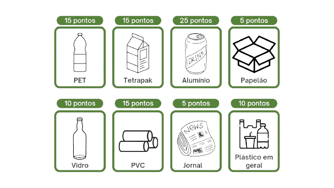
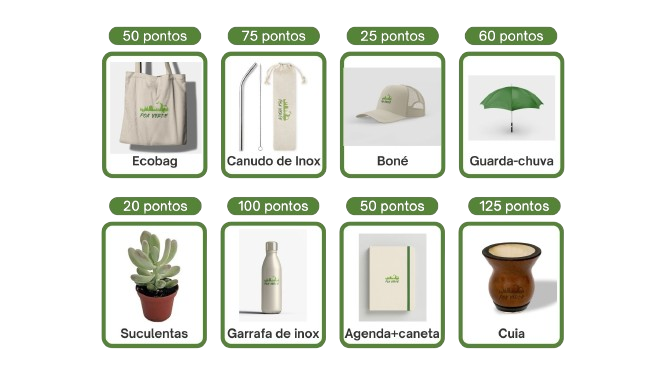

O POA Verde é um projeto público criado em parceria com a Prefeitura de Porto Alegre e o
Departamento Municipal de Limpeza Urbana (DMLU). O projeto foi criado para promover a sustentabilidade e
engajar a população através do incentivo da correta separação e reciclagem de resíduos em Porto Alegre.
Nosso foco principal é aumentar a quantidade de materiais reciclados e reduzir o descarte incorreto que
leva resíduos recicláveis aos aterros sanitários.
O que fazemos?
No POA Verde, oferecemos um serviço de coleta de materiais recicláveis e têxteis,
incentivando a população a participar ativamente da reciclagem. Isso se dá através da nossa unidade
móvel, que estará recebendo esses materiais para destinação correta, e recompensando a população através
de brindes sustentáveis. Nosso objetivo é mostrar que muitos materiais, especialmente têxteis, que
geralmente seriam descartados de maneira incorreta, podem ter um destino sustentável e contribuir para a
economia circular.
Onde estamos?
Nossa unidade móvel circula pelas feiras da cidade, onde coletamos diversos materiais recicláveis.
As roupas afetadas pelas enchentes passam por um processo de limpeza antes de serem destinadas a
empresas de reciclagem específicas, que transformam esses materiais em novos produtos, como cadarços e
componentes para calçados.
Como funciona?
Preparação dos Materiais:
Certifique-se de que suas embalagens recicláveis estejam limpas e devidamente separadas.
Caso sejam as roupas danificadas pela enchente, não é necessário fazer a limpeza antes de
levar.
Traga seus materiais recicláveis ou têxteis para um dos nossos pontos de coleta.
Entrega e Pesagem:
Vá até a nossa unidade móvel em uma das localizações anunciadas.
Entregue seus materiais para nossa equipe, que irá pesá-los. Lembre-se que aceitamos
materiais a partir de meio quilo. Se trouxer menos que isso, receberemos os materiais, mas
sem atribuir pontos.
Conversão em Pontos:
A quantidade de pontos que você acumula depende do tipo e do peso dos materiais entregues, A
relação a baixo são de pontos a cada 1 Kg:

*As roupas afetadas pela enchente não geram pontos, mas somos um ponto de coleta
para o
destino correto desse material.*
Registro e Acompanhamento de Pontos:
Após a pesagem, os pontos serão transferidos para o seu CPF.
Você pode conferir seus pontos acumulados inserindo seu CPF no site do POA Verde.
Troca de Pontos por Brindes:
Acumule pontos e troque por brindes ecológicos:

A retirada dos brindes pode ser feita ali mesmo na unidade móvel.
O Valor do Reaproveitamento Têxtil
O POA Verde vai além de auxiliar cidade com resíduos recilcáveis. Queremos destacar a importância de dar
um destino sustentável aos materiais têxteis que, se descartados de forma tradicional, acabariam em
aterros sanitários. Muitos não percebem que tecidos, retalhos e roupas antigas têm potencial para serem
reciclados e transformados em novos produtos, contribuindo para a economia circular e diminuindo a
poluição ambiental.
Participe do POA Verde e ajude a construir uma Porto Alegre mais limpa e sustentável!